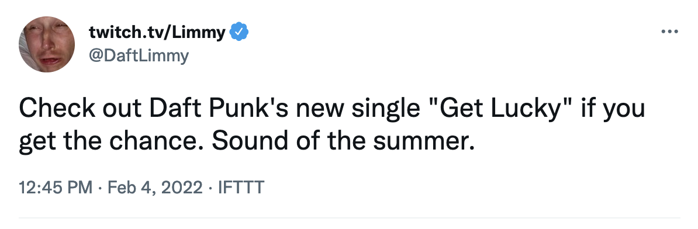
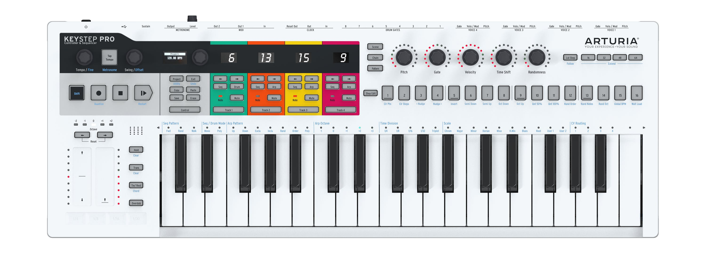

Around the WWWorld
What Daft Punk, Web MIDI and Web Audio can tell us about what the web does best
Hi I'm Katie
@katie_fenn
Content warning: Loud electronic music
I really like Daft Punk
(but you don't have to like Daft Punk)
(...promise)

CC BY-SA 2.0: Minyoung Choi
Daft Punk performing at Coachella 2007
Thomas Bangalter and
Guy-Manuel de Homem-Christo
CC BY 2.0: j bizzie
Roland TR-909
CC BY-SA 2.0: nourogg
Roland Juno 106
CC BY-SA 3.0: Gorupdebesanez
Emerson, Lake and Palmer
CC BY-SA 3.0: Krajazz
Vince Clarke
Web Audio API
Web MIDI API

Patching a modular synthesiser
Low-frequency oscillators
Sample demo
CC BY 2.0: j bizzie
Roland TR-909
Vocoder
F J Degenaar
Korg Microkorg
Vocoder demo
Demo
Web Audio API
- Requires domain knowledge
- Easy things are easy(ish)
- Hard things are possible
- Hard to know which is which
Web Audio API
- It's not a Digital Audio Workstation
- Excellent for education and experimentation
- Supported in Chrome, Edge, Safari and Firefox
Web MIDI API
- MIDI is well supported in musical hardware
- No support in Safari
- Excellent for hobbyist development
What the Web does best
Experimental music
CC BY 2.0: Rosa Menkman
Experimental music
CC BY 2.0: Rosa Menkman
Web 🖤 MIDI